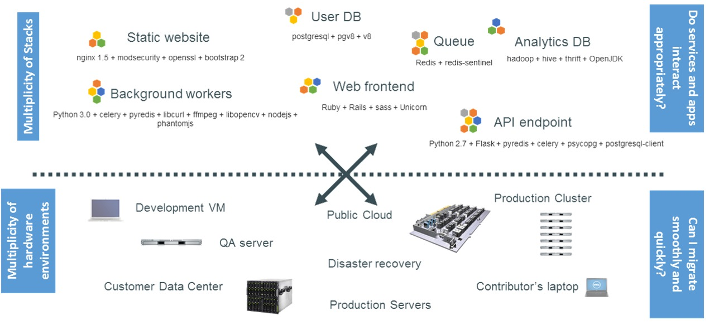
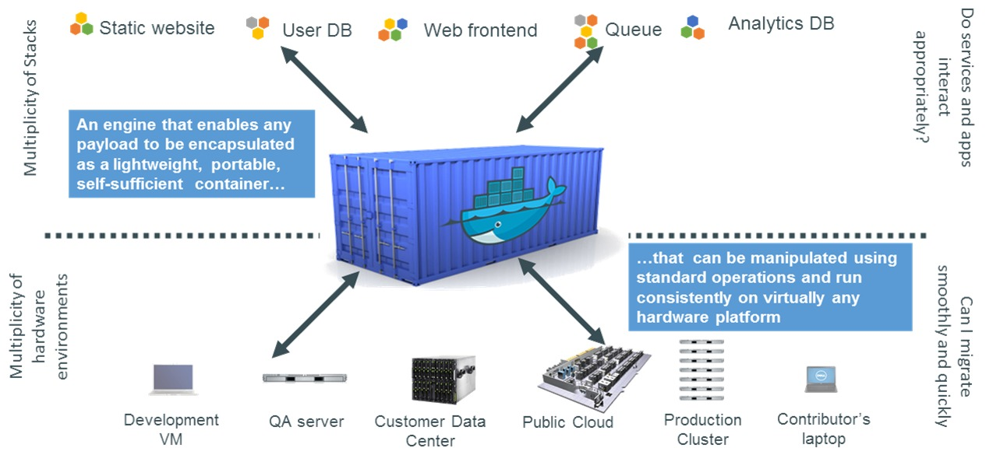
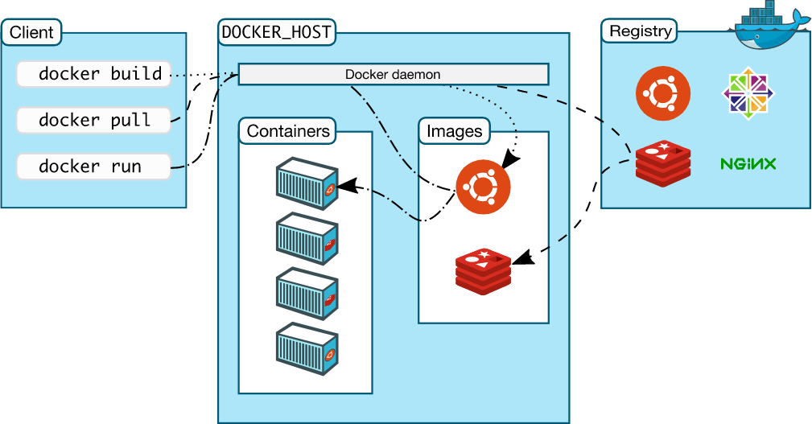
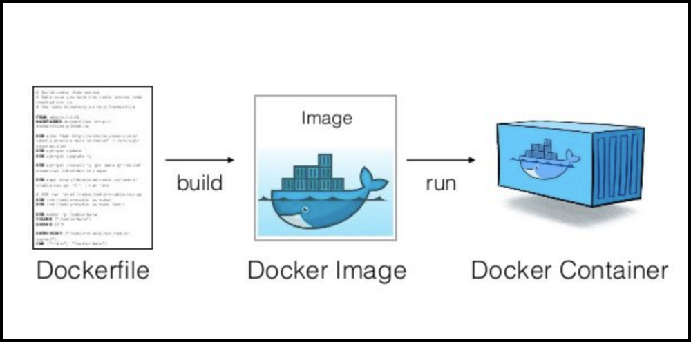
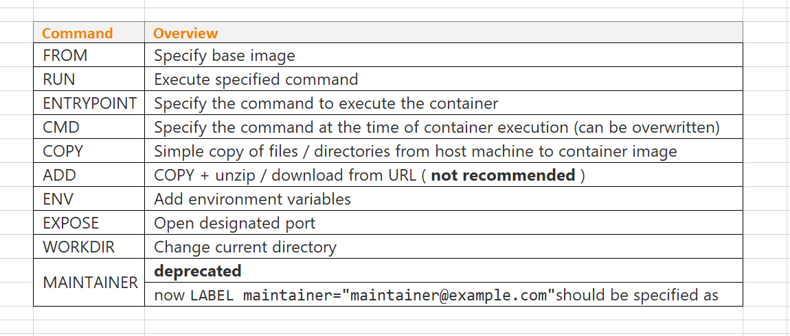
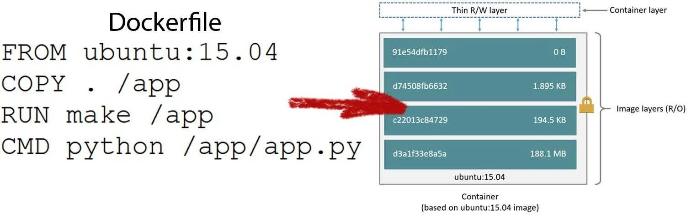
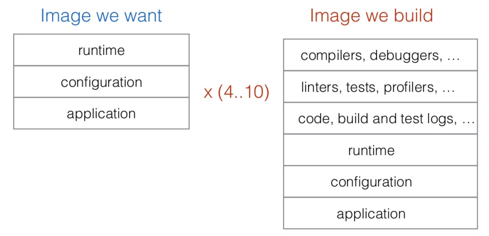

Introduction to Docker
Quick inventory
- Who has never heared of Docker?
- Who has used or is using Docker?
Goals
- Learn the basics about Docker
- Images & containers
- Data storage
- Application stacks
- Docker layers
- Use cases
If there are questions please do not hesitate to ask them!!
What is Docker?
A software containerisation platform
For packaging and running applications!
What is Docker trying to solve?
The famous “it works on my machine” headache!

Docker solution
Create reusable platform independent packages

Docker vocabulary
- Docker image
- Blueprint of an application
- Docker container
- Instance of a started image
- Docker engine
- Creates, ships and runs Docker containers
- Docker registry
- Storage for images
Virtual machine vs container

Docker architecture

Docker use cases
- Application isolation
- Developer productivity
- Rapid deployment
- Simplifying configuration
- Code pipeline management
Docker images and containers
- Image
- An immutable template for containers
- Can be created, pulled and pushed towards public and private registries
- e.g. Docker Hub
- Container
- Instance of an image
- Can be started, stopped, restarted
Reuse existing images
# search for image 'hello' in registry
$ docker search hello
$ docker search --filter=stars=3 --no-trunc hello
$ docker search --filter=is-official=true --no-trunc hello
# docker pull <registry>:<port>/<image>:<tag>
$ docker pull hello-world \n
$ docker pull ubuntu 'default latest'
$ docker pull ubuntu:latest 'equal to previous'
$ docker pull ubuntu:14.0.4 'with tag'
# list images on local system
$ docker image ls
# run an image and create a container
$ docker run hello-world
$ docker run ubuntu echo "hello world"
Demo
- Search for a Docker image (cli / dockerhub)
- Download Docker image
- Run hello-world
- Run ubuntu
- Get some system information
Create your own images
Dockerfile
Each Dockerfile is a script (DSL), composed of various commands and arguments to perform actions on a base image in order to create a new one.

Dockerfile commands

Dockerfile example 1
# file: Dockerfile
# select a base image
FROM tomcat:10.0.0
# add a file to the image
COPY index.html /usr/local/tomcat/webapps/ROOT/index.html
# build the image
$ docker build --file Dockerfile --tag tomcat:test .
# equal to (when in the Dockerfile folder!):
# -> docker build -t tomcat-test .
# run container and publish ports
$ docker run --publish 8080:8080 tomcat:test
# equal to:
# -> docker run -p 8080:8080 tomcat:test
Dockerfile example 2
# select a base image
FROM azul/zulu-openjdk:11
# add a file to the image
ADD service.jar
# expose a port
EXPOSE 8080
# run the application
CMD ["java","-jar","/service.jar"]
# build the image
$ docker build --file Dockerfile --tag my-app:0.1 .
# run container and publish ports
$ docker run --publish 80:8080 my-app:0.1
# ship/push the image
$ docker push my-app:0.1
Demo
- Build docker image
- Run docker image (results in a container)
- Push the docker image
Information & cleanup
# show running containers
$ docker ps
# show running/stopped containers
$ docker ps -a
# cleanup
$ docker system prune -a
$ docker container prune
Docker data storage
- In-container (bad idea!)
- Bind mounts (mount to local file system)
- Volumes (data is managed by docker)
# start interactive docker container, mount local folder
$ docker run -it --rm -v $(pwd):/my-data openjdk:11-jdk bash
# create volume
$ docker volume create my-volume
# list volumes
$ docker volume ls
# start docker container and use docker volume
$ docker run -it --rm -v my-volume:/my-data alpine sh
Demo
- Use local filesystem mount
- Use Docker volumes
Docker compose
Managing multiple containers via the commandline is cumbersome! So we we need a way to easily handle multiple containers at once.
Without / With compose
- Without compose
- build and run one container at a time
- manually connect containers
- With compose
- define multi container stack in a file
- single command to start entire stack
- handles container dependencies
3 Steps of compose
- Define the services that make your application stack in a Docker compose file
- (optional) Define your application environment in a Dockerfile (compose build!)
- Run the CLI:
$ docker-compose up
Compose example
version: '3.9'
services:
db:
image: mysql:5.7
restart: always
# some code omitted!!
volumes:
- db_data:/var/lib/mysql
wordpress:
image: wordpress:latest
ports:
- "8000:80"
restart: always
environment:
# some code omitted!!
WORDPRESS_DB_HOST: db:3306
depends_on:
- db
volumes:
db_data:
Compose commands
$ docker-compose up
$ docker-compose up -d
$ docker-compose down
$ docker-compose down --volumes
Demo
- Start full stack using Docker Compose
- Wordpress
- MySql with admin tooling
- Using Compose to build
Docker layers
- Each
buildcommand generates a layer - A complete
buildcreates a SINGLE image

Problems with Docker build

Multistage build
- Build the application
- Perform static code analysis
- Run unit tests
- Run integration tests
- Package application
Do we have a problem?
FROM openjdk:11-jdk
WORKDIR /opt/app/src
# Copies in our code and compiles
COPY /src/*.java ./
RUN javac *.java
# Perform static code analysis
RUN apt-get install sonar-scanner
RUN sonar-scanner -Dsonar.host.url=http://host.docker.internal:9000 -Dsonar.projectKey=helloworld -Dsonar.sources=.
RUN apt-get remove sonar-scanner
# Run unit tests
# Run integration tests
# Create application
RUN rm -rf /src/*.java
CMD java HelloWorld
Docker builder pattern
- 2 Dockerfiles
- 1st for build tools
- 2nd for runtime
- Drawbacks
- 2 Dockerfiles
- Orchestration needed
Docker multistage builds
- Single Dockerfile with multiple stages
- Same build!! Local and CI
# Copies in our code and compiles
FROM openjdk:11-jdk as builder
WORKDIR /opt/app/src
COPY /src/*.java ./
RUN javac *.java
# Perform static code analysis
FROM sonarsource/sonar-scanner-cli as sonarqube
WORKDIR /opt/app/src
COPY --from=builder /opt/app/src ./
RUN sonar-scanner -Dsonar.host.url=http://host.docker.internal:9000 -Dsonar.projectKey=helloworld -Dsonar.sources=.
# Run unit tests
# Run integration tests
# Create application
FROM openjdk:11-jdk as application
WORKDIR /opt/app/src
COPY --from=builder /opt/app/src/*.class ./
CMD java HelloWorld
Demo
- Perform multistage build
- Compile code
- Static code analysis
- Create image
As a developer
- I need to build my software
- Use a container
- I need a database or something else…
- dont install local but use a compose file!
- I need to run my software
- build using docker and run using docker